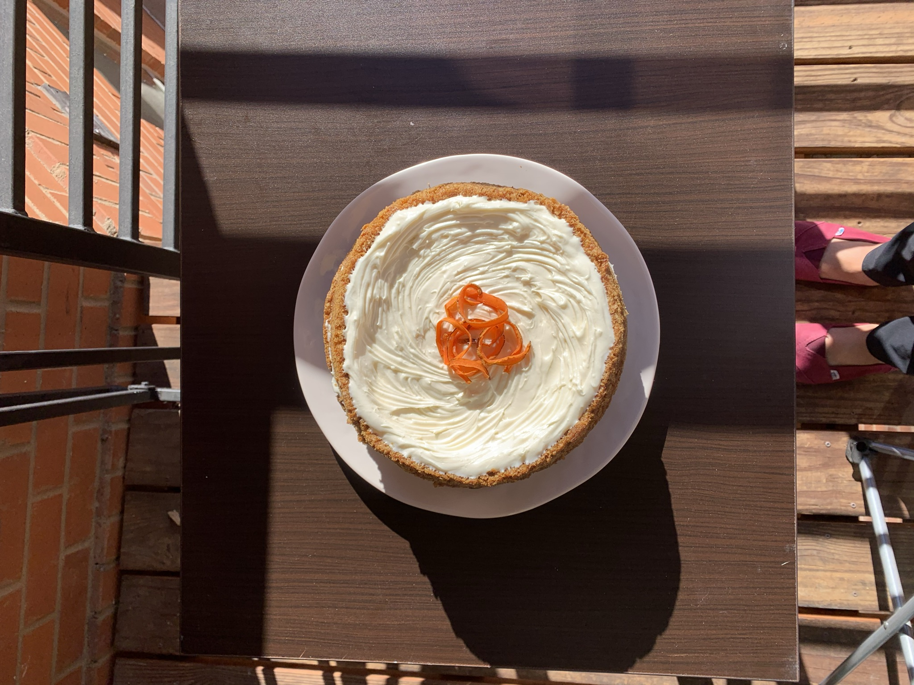
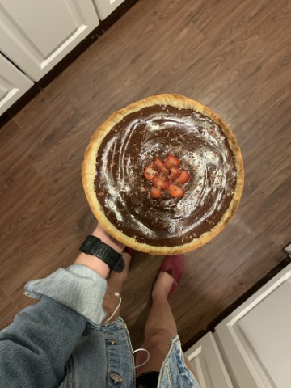

Masa Sablée
This is a type of crust that works perfectly for any sweet pie. It’s a
key recipe to have under your belt. I learned to make Masa Sablée while
working at Vane’s kitchen, a baker friend of my mom’s. She used Osvaldo
Gross’s recipe.
One day in 2018, my friend Nico Silva wrote down this Masa Sablée recipe
for my collection. I now smile every time I pick up that piece of paper.
Ingredients
- 150 grams room temperature unsalted butter
-
100 grams powdered sugar (or granulated white sugar if unavailable)
- 1 egg
- 250 grams all-purpose flour
- A pinch of salt
- A splash of vanilla extract or the zest of a lemon
Procedure
- Cream the butter and the sugar together.
-
Add the egg and mix well. Add your flavoring of choice (vanilla or
lemon zest).
-
Gently add the flour and salt, handling the dough as minimally as
possible.
-
Wrap the dough in plastic wrap and let it rest in the fridge for at
least 1 hour.
- Bake it, or freeze it for later use!